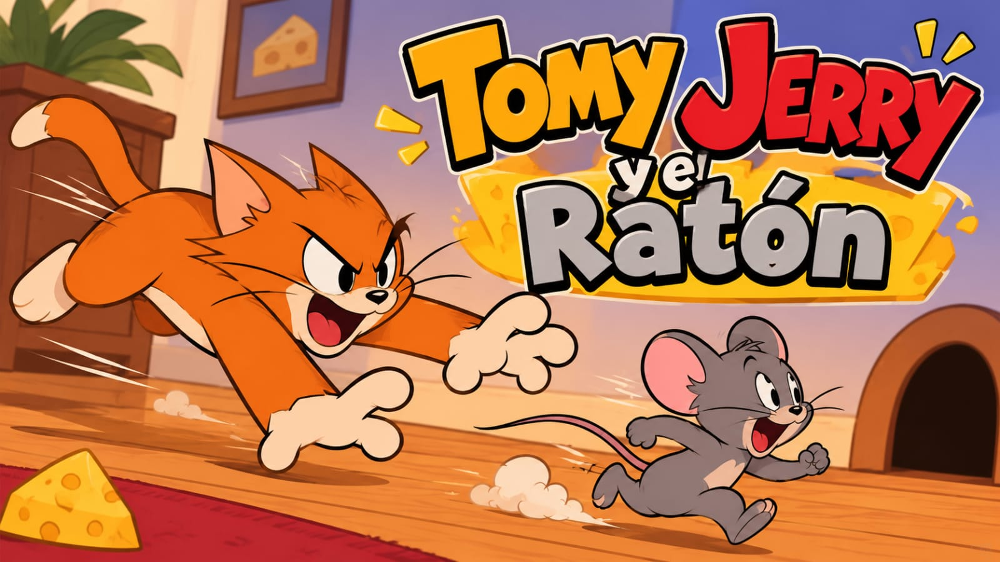

Tomy Jerry y el Ratón
Género: arcade, habilidad y supervivencia.
Es un juego de aventura y supervivencia en el que controlás a un pequeño ratón que debe recolectar la mayor cantidad de naranjas posible para sumar puntos. Pero no será tan fácil: mientras buscás y agarrás las naranjas, un gato te persigue constantemente intentando atraparte. Tendrás que moverte con rapidez, esquivar al gato y aprovechar cada oportunidad para conseguir la mayor puntuación posible sin que te atrape.